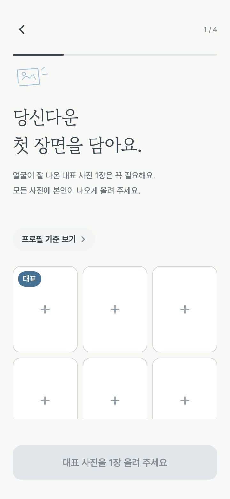
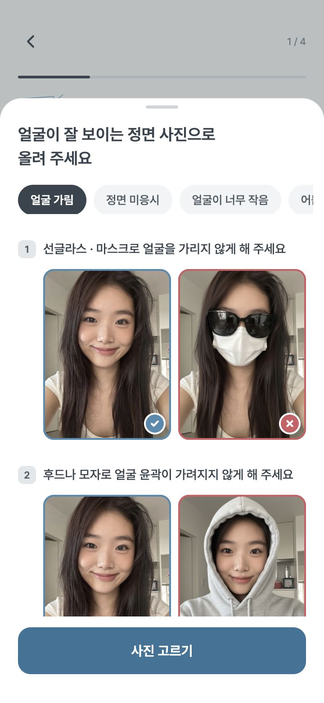
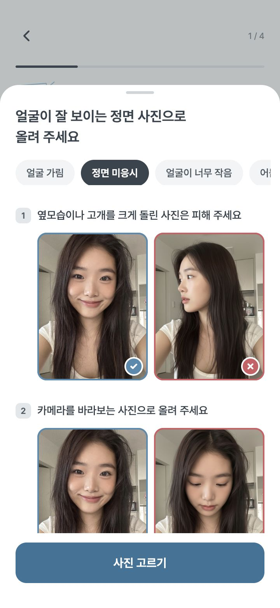
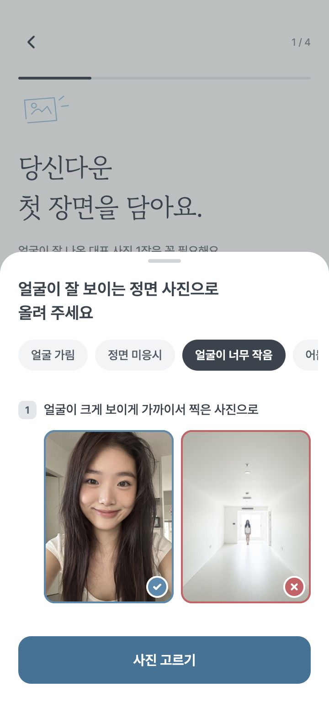
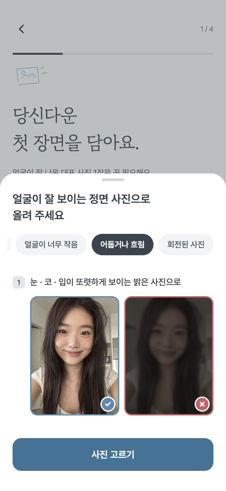
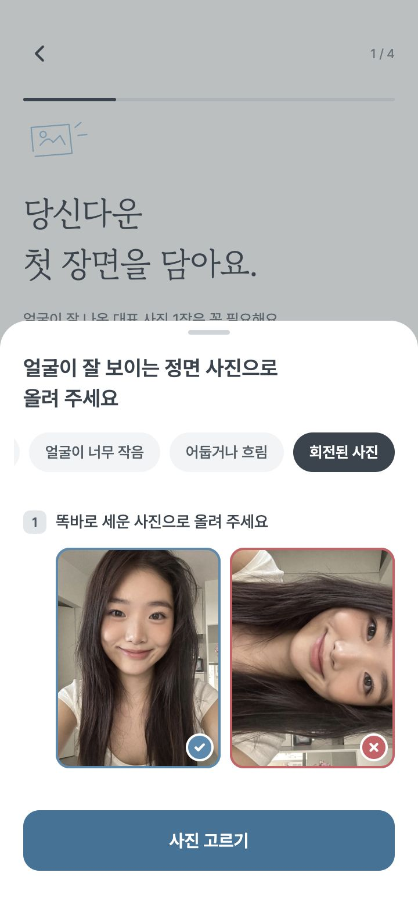
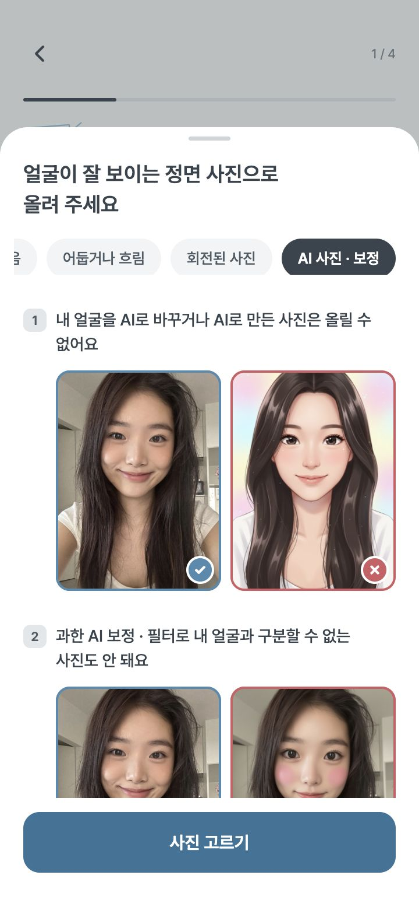
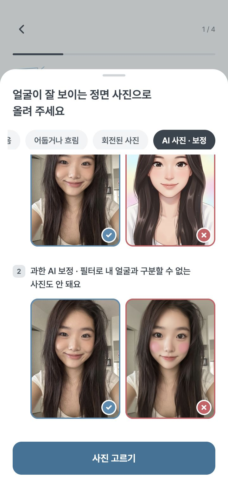

기존 앱: 사진 단계 위쪽에 "어떤 사진이면 좋을까요?" 펼침 + 정면 · 가려진 얼굴 두 그림 + 두 줄 설명이 늘 보여요.
간단 벤치마킹(Mobbin 6곳): 빈 칸 자체에 역할을 적어 두기(P1) · 자세한 팁은 링크 → 시트로(P2) · ✓ / ✗ 나란히(P3) · 짧은 체크 3줄(P4). 원칙은 design-references/photo-guide/principles.md.
그림(다듬음): 손그림 선 얼굴은 유아틱해 보여서, 표정 없는 단정한 도형 실루엣으로 바꿨어요 — 원 머리 + 둥근 어깨(cool-neutral-300), 정면은 작은 눈 점 둘, 가린 얼굴은 눈 위 진한 띠(cool-neutral-700). ✓는 인증 파랑 · ✗는 빨강 작은 표시, 바탕은 뉴트럴.
G1 칸 안 + 시트: 대표 빈 칸에 작은 얼굴 그림과 "얼굴이 보이는 정면 사진". 칸 아래 "어떤 사진이 좋을까요? ›"를 누르면 ✓ / ✗ 두 장 + 체크 3줄 시트. 화면은 지금처럼 가볍고, 대표 칸만 보고도 무엇을 올릴지 알아요.
G2 늘 보이는 카드: 설명 아래 회색 카드에 ✓ / ✗ 두 장 + 한 줄. 기존 앱과 가장 비슷하고 놓칠 일이 없지만, 사진 칸이 아래로 밀려요.
최종 방향 · 프로필 기준 보기 버튼 → 바텀 시트
사진 칸: 안내를 넣지 않고 지금 그대로. 설명 두 줄 아래 회색 알약 버튼 "프로필 기준 보기 ›".
시트: 제목 "얼굴이 잘 보이는 정면 사진으로 올려 주세요" → 사례 칩(얼굴 가림 · 정면 미응시 · 얼굴이 너무 작음 · 어둡거나 흐림 · 회전된 사진 · AI 사진 · 보정, 고른 칩은 진한 회색, 옆으로 넘김) → 번호 붙은 기준 + ✓ / ✗ 사진 짝(파랑 · 빨강 테두리) → "사진 고르기"(누르면 사진 고르기로).
사진: 한 사람으로 통일 — Higgsfield Soul 2.0으로 기준 사진을 만들고, 같은 인물로 선글라스 + 마스크 · 후드 · 옆모습 · 아래를 봄 · 멀리서를 만들었어요(Nano Banana). 어둡거나 흐림 · 회전은 기준 사진을 어둡게 · 돌려서. AI 탭은 같은 인물을 AI 그림체로 바꾼 것과 AI 보정 · 필터를 과하게 씌운 것. 문구는 "내 얼굴을 AI로 바꾸거나 AI로 만든 사진은 올릴 수 없어요" · "과한 AI 보정 · 필터로 내 얼굴과 구분할 수 없는 사진도 안 돼요".

1 사진 단계칸은 그대로 · 설명 아래 "프로필 기준 보기 ›"

2 기준 시트 · 얼굴 가림① 선글라스 · 마스크 ② 후드 · 모자

3 정면 미응시① 옆모습 ② 아래를 봄

4 얼굴이 너무 작음멀리서 찍은 사진

5 어둡거나 흐림눈 · 코 · 입이 안 보임

6 회전된 사진누운 사진

7 AI 사진 · 보정① 내 얼굴을 AI로 바꾸거나 AI로 만든 사진

7 아래로 내림② 과한 AI 보정 · 필터로 내 얼굴과 구분할 수 없는 사진
(앞 시안) 실제 사진으로
사진: AI 티가 덜 나게 — 폰으로 찍은 듯한 자연광, 보정 · 필터 없이 피부결(주근깨 · 모공) 살린 정면 사진과, 선글라스 + 마스크로 가린 사진. 네 장 중 날짜 찍힘 · 어색한 두 장은 뺐어요.
G1: 대표 칸엔 작은 동그란 사진 + "얼굴이 보이는 정면 사진", 시트엔 ✓ / ✗ 사진 두 장. G2: 카드에 같은 두 장.